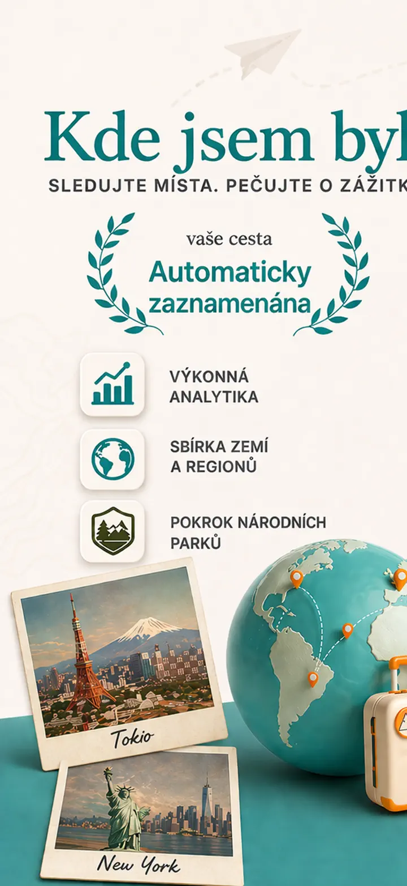
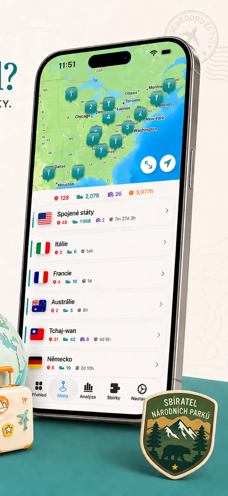
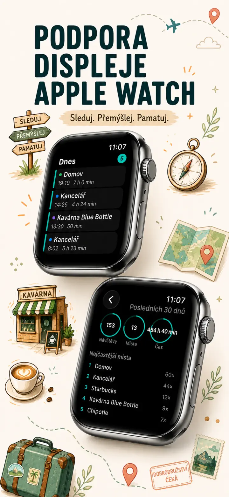
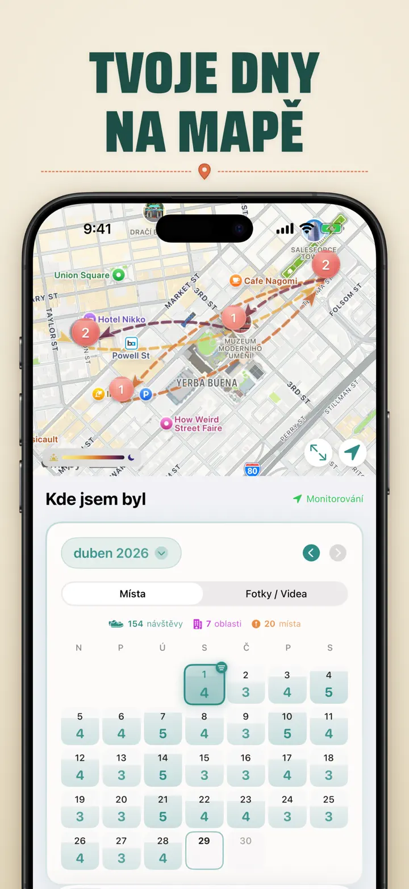
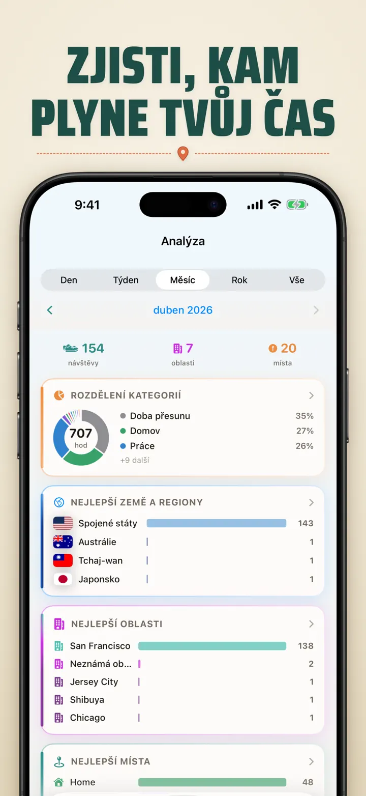
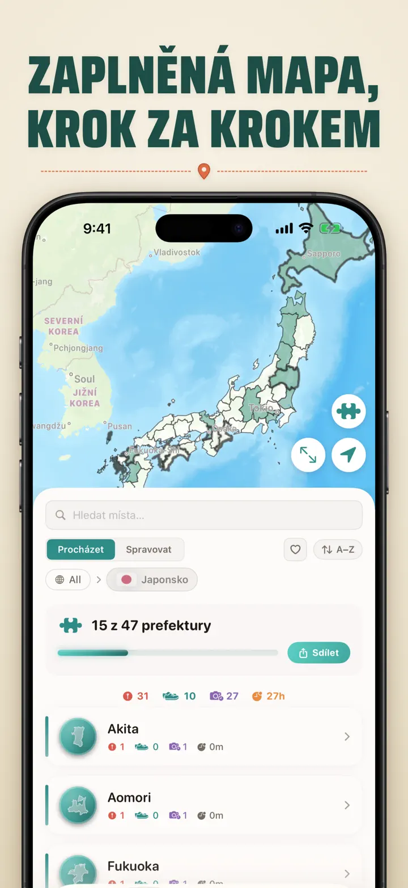
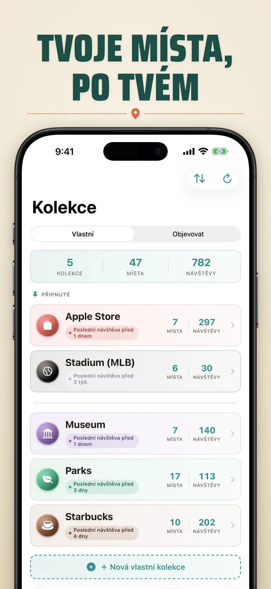
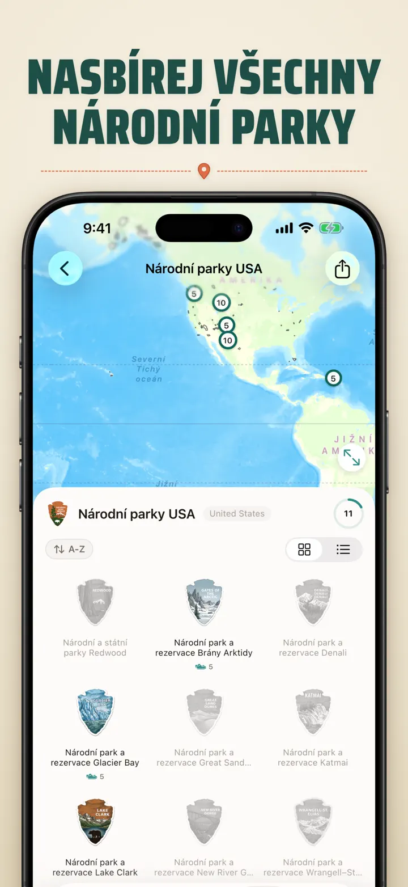
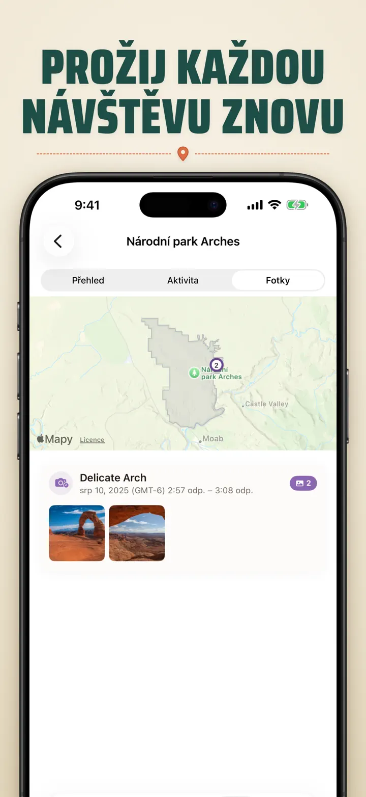

Kde jsem byl?
Sledování polohy a časová osa
Novinka: 103 svatyní Ichinomiya Japonska, každá s vlastním vyřezávaným odznakem. Automatické sledování návštěv a soukromá časová osa, vše v tvém zařízení.
Stáhnout v App Storu
O aplikaci
Kde jsem byl — Tvoje osobní paměť míst
Zkusil sis vzpomenout na skvělou restauraci z minulého měsíce? Nebo kolik času trávíš v práci oproti domovu? Kde jsem byl automaticky sleduje tvoje návštěvy a vytváří krásnou časovou osu tvé cesty.
AUTOMATICKÉ SLEDOVÁNÍ
Žádné ruční zapisování. Aplikace tiše zaznamenává příjezdy a odjezdy, vytváří podrobnou historii návštěv bez jakéhokoli úsilí z tvé strany.
CHYTRÝ POHLED V KALENDÁŘI
Prohlížej si návštěvy po dnech, týdnech nebo měsících. Intuitivní kalendář zobrazuje počty návštěv a místa na první pohled. Klepnutím na libovolný den zjistíš, kde jsi byl.
WIDGETY PLOCHY A ZAMYKACÍ OBRAZOVKY
Své poslední návštěvy vidíš na první pohled díky střednímu widgetu plochy. Widgety zamykací obrazovky ukazují tvoji aktuální polohu, živý časovač pobytu nebo dnešní počet návštěv — všechny lze klepnutím otevřít přímo v aplikaci.
USPOŘÁDANÁ MÍSTA
Místa jsou automaticky seskupena podle regionu a města. Přiřazuj vlastní kategorie jako Domov, Práce, Posilovna nebo Kavárna. Vytvářej vlastní kategorie s ikonami a barvami odpovídajícími tvému životnímu stylu.
VÝKONNÁ ANALYTIKA
Odhal vzory ve svém životě:
- Rozložení času napříč kategoriemi
- Tvoje nejnavštěvovanější místa
- Analýza týdenního rytmu
- Trendy frekvence návštěv
- Graf délky pobytu pro každé místo — podle dne, týdne, měsíce nebo roku
SBÍRKA KRAJŮ A REGIONŮ
Proměň cestování v puzzle! Sleduj, kolik regionů jsi navštívil v každé zemi. Sdílej pokrok jako obrázek puzzle s přáteli a rodinou.
SLEDOVÁNÍ NÁRODNÍCH PARKŮ
Prozkoumej přírodu! Automaticky zaznamenávej návštěvy národních parků a sleduj svůj pokrok vedle každodenních míst.
100 SLAVNÝCH JAPONSKÝCH HRADŮ
Cestuješ po Japonsku? Nová vestavěná sbírka sleduje tvé návštěvy 100 slavných hradů země. Najdeš ji v záložce Sbírky → Objevit → Japonsko.
VLASTNÍ SBÍRKY
Sleduj cokoli — Apple Stores, muzea, pivovary. Vytvoř sbírku, nastav klíčová slova a sleduj, jak se sama plní. Místa můžeš ručně přidat nebo odebrat. Každá sbírka ukazuje počet, historii a mapu.
IMPORTUJ SVOU HISTORII POLOHY
Přicházíš z jiné aplikace? Vezmi si s sebou celou svou historii — formát se rozpozná automaticky, velké exporty zvládneme a před importem uvidíš náhled:
- Google Timeline (export z Google Maps nebo Google Takeout)
- Arc Timeline (měsíční soubory .json, které exportuješ z Arc)
- Moves (záloha ProtoGeo / Facebook Moves)
HROMADNÁ SPRÁVA
Spravuj všechna svá místa na jednom místě. Vyhledávej, řaď a filtruj. Vyber více míst a hromadně je kategorizuj nebo smaž. Udržuj svou knihovnu míst přehlednou a uspořádanou.
SOUKROMÍ NA PRVNÍM MÍSTĚ
Tvoje polohová data zůstávají v zařízení. Žádný účet není potřeba. Žádná data se neposílají na servery. Tvé pohyby jsou tvoje věc.
IDEÁLNÍ PRO:
- Sledování pracovní doby a míst
- Pamatování restaurací a obchodů
- Analýzu každodenní rutiny
- Cestovní deník a evidenci návštěv v parcích
- Výkazy výdajů a kilometrů
FUNKCE:
- Automatická detekce příjezdu a odjezdu
- Pohled v kalendáři s denní časovou osou návštěv
- Widgety plochy a zamykací obrazovky s odkazy do aplikace
- Seskupování míst podle regionu a města
- Vlastní kategorie s ikonami a barvami
- Chytré návrhy kategorií z Apple Maps
- Podrobná historie návštěv s délkou trvání
- Graf délky pobytu pro místa (den / týden / měsíc / rok)
- Analytický přehled s poznatky
- Vyhledávání a filtrování míst
- Sbírka krajů se sdílitelným obrázkem puzzle
- Sledování pokroku v národních parcích
- Vestavěná sbírka 100 slavných japonských hradů
- Vlastní sbírky s automatickým párováním podle klíčových slov, ruční úpravou a statistikami
- Hromadná správa míst
- Import z Google Timeline, Arc Timeline a Moves
- Možnosti exportu
- Bez nutnosti účtu
- Design zaměřený na soukromí
Začni budovat svou paměť míst ještě dnes. Stáhni Kde jsem byl a nikdy nezapomeň, kde jsi byl.
Privacy Policy: https://masawata.net/privacy-policy.html Terms Of Service: https://www.apple.com/legal/internet-services/itunes/dev/stdeula/
Snímky obrazovky








Kde jsem byl?
Novinka: 103 svatyní Ichinomiya Japonska, každá s vlastním vyřezávaným odznakem. Automatické sledování návštěv a soukromá časová osa, vše v tvém zařízení.
Stáhnout v App Storu